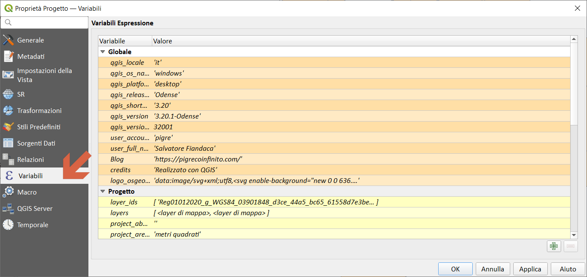
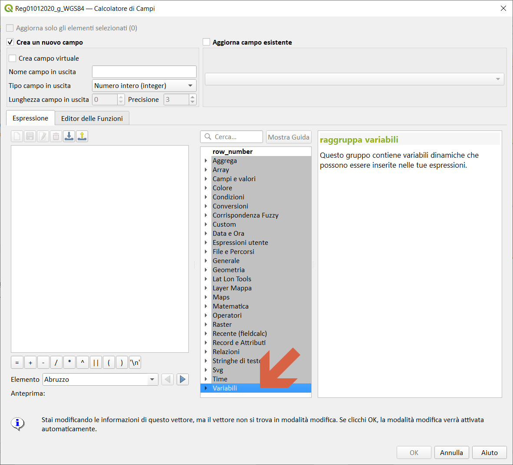
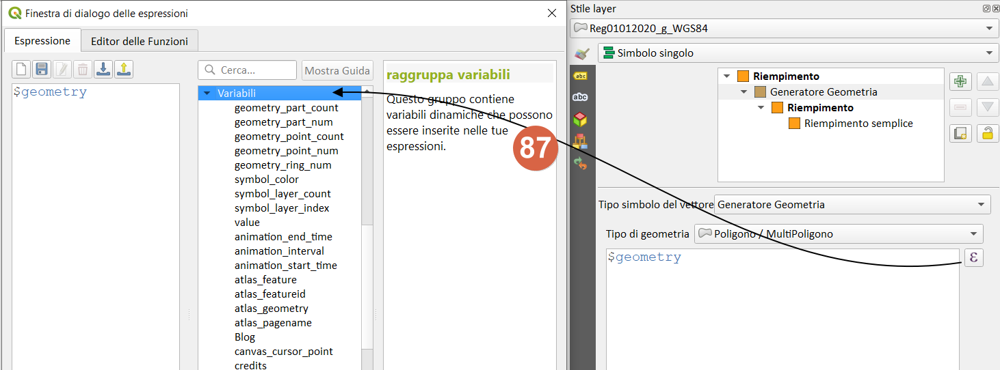
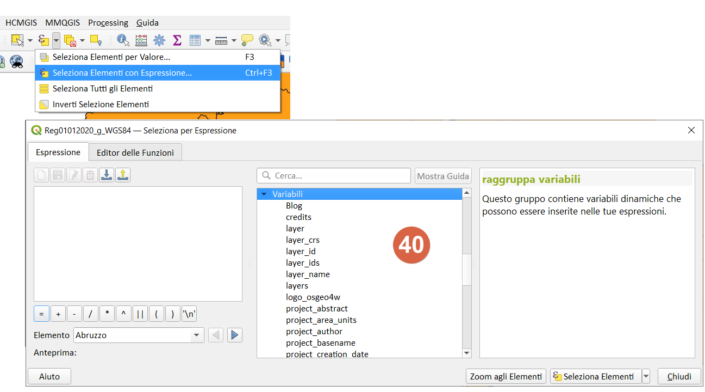
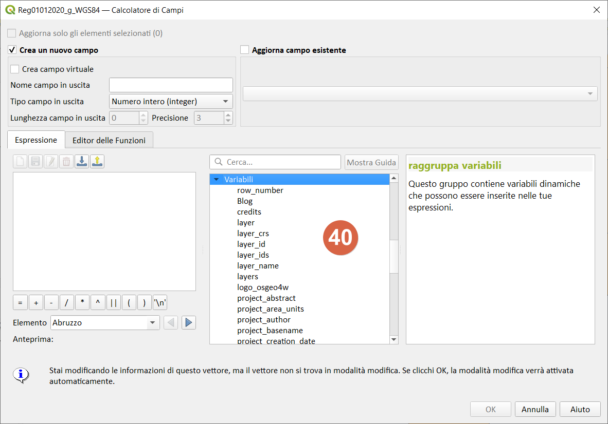
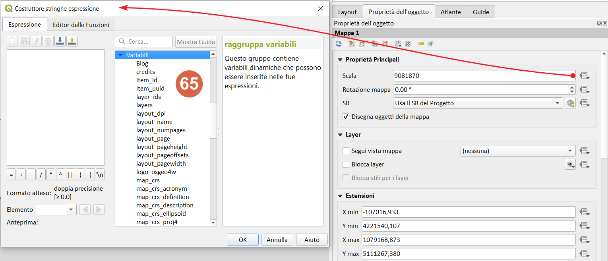

Variabili↵
Funzionalità introdotta da Nyall Dawson nella QGIS 2.12 Lyon
Questo gruppo contiene variabili dinamiche relative all'applicazione, al file di progetto e ad altre impostazioni. Significa che alcune funzioni potrebbero non essere disponibili in base al contesto:
- seleziona per espressione

- calcolatore di campi

- geometry generator

- proprietà del layer

- compositore di stampe

In QGIS, puoi utilizzare le variabili per memorizzare dati utili con valori ricorrenti (ad esempio il titolo del progetto o il nome completo dell’utente) che possono essere utilizzati nelle espressioni. Le variabili possono essere definite a livello globale dell’applicazione, a livello di progetto, a livello di layer, a livello di composizione e a livello di elemento del compositore. Proprio come le regole CSS a cascata, le variabili possono essere sovrascritte, ad esempio una variabile a livello di progetto sovrascrive le variabili di livello globale di qualsiasi applicazione impostate con lo stesso nome.
Puoi utilizzare queste variabili per creare stringhe di testo o altre espressioni personalizzate utilizzando il carattere '@' prima del nome della variabile.
Video di Nyall Dawson sulle espressioni, varibile e sovrascrittura definita dai dati
Elenco variabili↵
Riguardano (aggiornato a QGIS 3.20 Odense):
| Variable | Description |
|---|---|
| algorithm_id | The unique ID of an algorithm |
| animation_end_time | End of the animation’s overall temporal time range (as a datetime value) |
| animation_interval | Duration of the animation’s overall temporal time range (as an interval value) |
| animation_start_time | Start of the animation’s overall temporal time range (as a datetime value) |
| atlas_feature | The current atlas feature (as feature object) |
| atlas_featureid | The current atlas feature ID |
| atlas_featurenumber | The current atlas feature number in the layout |
| atlas_filename | The current atlas file name |
| atlas_geometry | The current atlas feature geometry |
| atlas_layerid | The current atlas coverage layer ID |
| atlas_layername | The current atlas coverage layer name |
| atlas_pagename | The current atlas page name |
| atlas_totalfeatures | The total number of features in atlas |
| canvas_cursor_point | The last cursor position on the canvas in the project’s geographical coordinates |
| cluster_color | The color of symbols within a cluster, or NULL if symbols have mixed colors |
| cluster_size | The number of symbols contained within a cluster |
| current_feature | The feature currently being edited in the attribute form or table row |
| current_geometry | The geometry of the feature currently being edited in the form or the table row |
| current_parent_feature | represents the feature currently being edited in the parent form. Only usable in an embedded form context. |
| current_parent_geometry | represents the geometry of the feature currently being edited in the parent form. Only usable in an embedded form context. |
| form_mode | What the form is used for, like AddFeatureMode, SingleEditMode, MultiEditMode, SearchMode, AggregateSearchMode or IdentifyMode as string. |
| frame_duration | Temporal duration of each animation frame (as an interval value) |
| frame_number | Current frame number during animation playback |
| frame_rate | Number of frames per second during animation playback |
| fullextent_maxx | Maximum x value from full canvas extent (including all layers) |
| fullextent_maxy | Maximum y value from full canvas extent (including all layers) |
| fullextent_minx | Minimum x value from full canvas extent (including all layers) |
| fullextent_miny | Minimum y value from full canvas extent (including all layers) |
| geometry_part_count | The number of parts in rendered feature’s geometry |
| geometry_part_num | The current geometry part number for feature being rendered |
| geometry_point_count | The number of points in the rendered geometry’s part |
| geometry_point_num | The current point number in the rendered geometry’s part |
| geometry_ring_num | Current geometry ring number for feature being rendered (for polygon features only). The exterior ring has a value of 0. |
| grid_axis | The current grid annotation axis (eg, ‘x’ for longitude, ‘y’ for latitude) |
| grid_number | The current grid annotation value |
| item_id | The layout item user ID (not necessarily unique) |
| item_uuid | The layout item unique ID |
| layer | The current layer |
| layer_crs | The Coordinate Reference System Authority ID of the current layer |
| layer_id | The ID of current layer |
| layer_ids | The IDs of all the map layers in the current project as a list |
| layer_name | The name of current layer |
| layers | All the map layers in the current project as a list |
| layout_dpi | The composition resolution (DPI) |
| layout_name | The layout name |
| layout_numpages | The number of pages in the layout |
| layout_page | The page number of the current item in the layout |
| layout_pageheight | The active page height in the layout (in mm for standard paper sizes, or whatever unit was used for custom paper size) |
| layout_pageoffsets | Array of Y coordinate of the top of each page. Allows to dynamically position items on pages in a context where page sizes may change |
| layout_pagewidth | The active page width in the layout (in mm for standard paper sizes, or whatever unit was used for custom paper size) |
| legend_column_count | The number of columns in the legend |
| legend_filter_by_map | Indicates if the content of the legend is filtered by the map |
| legend_filter_out_atlas | Indicates if the atlas is filtered out of the legend |
| legend_split_layers | Indicates if layers can be split in the legend |
| legend_title | The title of the legend |
| legend_wrap_string | The character(s) used to wrap the legend text |
| map_crs | The Coordinate reference system of the current map |
| map_crs_acronym | The acronym of the Coordinate reference system of the current map |
| map_crs_definition | The full definition of the Coordinate reference system of the current map |
| map_crs_description | The name of the Coordinate reference system of the current map |
| map_crs_ellipsoid | The acronym of the ellipsoid of the Coordinate reference system of the current map |
| map_crs_proj4 | The Proj4 definition of the Coordinate reference system of the current map |
| map_crs_projection | The descriptive name of the projection method used by the Coordinate reference system of the map (e.g. ‘Albers Equal Area’) |
| map_crs_wkt | The WKT definition of the Coordinate reference system of the current map |
| map_end_time | The end of the map’s temporal time range (as a datetime value) |
| map_extent | The geometry representing the current extent of the map |
| map_extent_center | The point feature at the center of the map |
| map_extent_height | The current height of the map |
| map_extent_width | The current width of the map |
| map_id | The ID of current map destination. This will be ‘canvas’ for canvas renders, and the item ID for layout map renders |
| map_interval | The duration of the map’s temporal time range (as an interval value) |
| map_layer_ids | The list of map layer IDs visible in the map |
| map_layers | The list of map layers visible in the map |
| map_rotation | The current rotation of the map |
| map_scale | The current scale of the map |
| map_start_time | The start of the map’s temporal time range (as a datetime value) |
| map_units | The units of map measurements |
| model_path | Full path (including file name) of current model (or project path if model is embedded in a project). |
| model_folder | Folder containing current model (or project folder if model is embedded in a project). |
| model_name | Name of current model |
| model_group | Group for current model |
| notification_message | Content of the notification message sent by the provider (available only for actions triggered by provider notifications). |
| parent | Refers to the current feature in the parent layer, providing access to its attributes and geometry when filtering an aggregate function |
| project_abstract | The project abstract, taken from project metadata |
| project_area_units | The area unit for the current project, used when calculating areas of geometries |
| project_author | The project author, taken from project metadata |
| project_basename | The basename of current project’s filename (without path and extension) |
| project_creation_date | The project creation date, taken from project metadata |
| project_crs | The Coordinate reference system of the project |
| project_crs_arconym | The acronym of the Coordinate reference system of the project |
| project_crs_definition | The full definition of the Coordinate reference system of the project |
| project_crs_description | The description of the Coordinate reference system of the project |
| project_crs_ellipsoid | The ellipsoid of the Coordinate reference system of the project |
| project_crs_proj4 | The Proj4 representation of the Coordinate reference system of the project |
| project_crs_wkt | The WKT (well known text) representation of the coordinate reference system of the project |
| project_distance_units | The distance unit for the current project, used when calculating lengths of geometries and distances |
| project_ellipsoid | The name of the ellipsoid of the current project, used when calculating geodetic areas or lengths of geometries |
| project_filename | The filename of the current project |
| project_folder | The folder of the current project |
| project_home | The home path of the current project |
| project_identifier | The project identifier, taken from the project’s metadata |
| project_keywords | The project keywords, taken from the project’s metadata |
| project_last_saved | Date/time when project was last saved. |
| project_path | The full path (including file name) of the current project |
| project_title | The title of current project |
| project_units | The units of the project’s CRS |
| qgis_locale | The current language of QGIS |
| qgis_os_name | The current Operating system name, eg ‘windows’, ‘linux’ or ‘osx’ |
| qgis_platform | The QGIS platform, eg ‘desktop’ or ‘server’ |
| qgis_release_name | The current QGIS release name |
| qgis_short_version | The current QGIS version short string |
| qgis_version | The current QGIS version string |
| qgis_version_no | The current QGIS version number |
| row_number | Stores the number of the current row |
| snapping_results | Gives access to snapping results while digitizing a feature (only available in add feature) |
| scale_value | The current scale bar distance value |
| symbol_angle | The angle of the symbol used to render the feature (valid for marker symbols only) |
| symbol_color | The color of the symbol used to render the feature |
| symbol_count | The number of features represented by the symbol (in the layout legend) |
| symbol_id | The Internal ID of the symbol (in the layout legend) |
| symbol_label | The label for the symbol (either a user defined label or the default autogenerated label - in the layout legend) |
| symbol_layer_count | Total number of symbol layers in the symbol |
| symbol_layer_index | Current symbol layer index |
| symbol_marker_column | Column number for marker (valid for point pattern fills only). |
| symbol_marker_row | Row number for marker (valid for point pattern fills only). |
| user_account_name | The current user’s operating system account name |
| user_full_name | The current user’s operating system user name |
| value | The current value |
| with_variable | Allows setting a variable for usage within an expression and avoid recalculating the same value repeatedly |
| zoom_level | Zoom level of the tile that is being rendered (derived from the current map scale). Normally in interval [0, 20]. |
Screenshot livelli↵
- Proprietà Progetto
- 
-
Gruppo sul calcolatore di campi,Seleziona per espressione 
-
Generatore di geometria- stile
-

-
Selezione per espressione
-

-
Calcolatore di campi,Seleziona per espressione
-

-
Compositore di stampe
- 